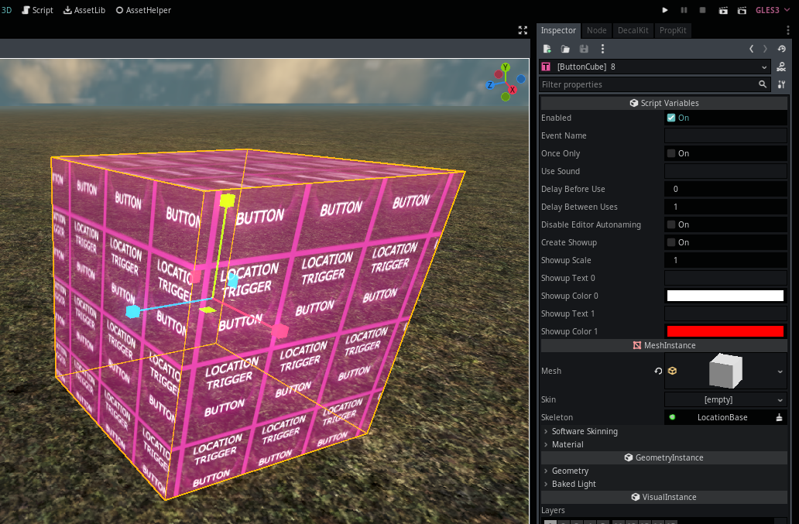
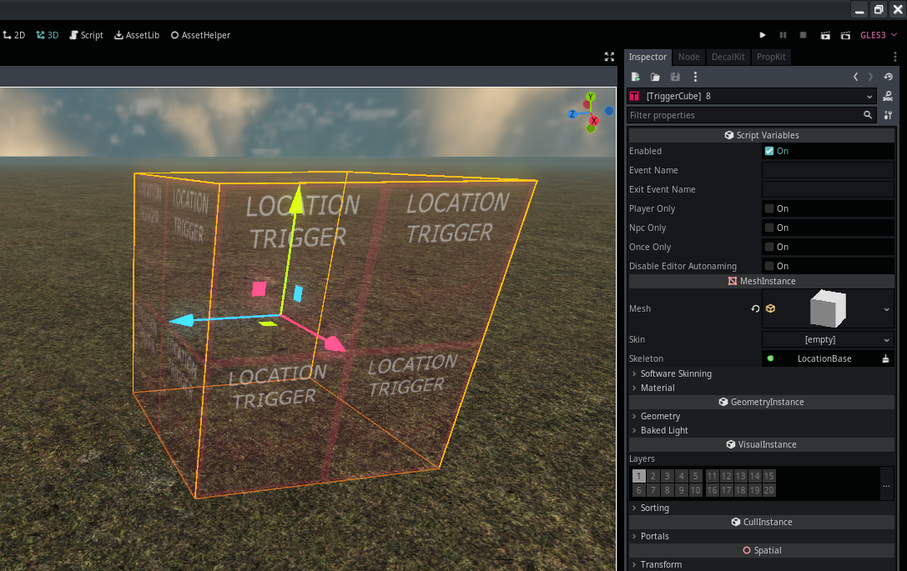
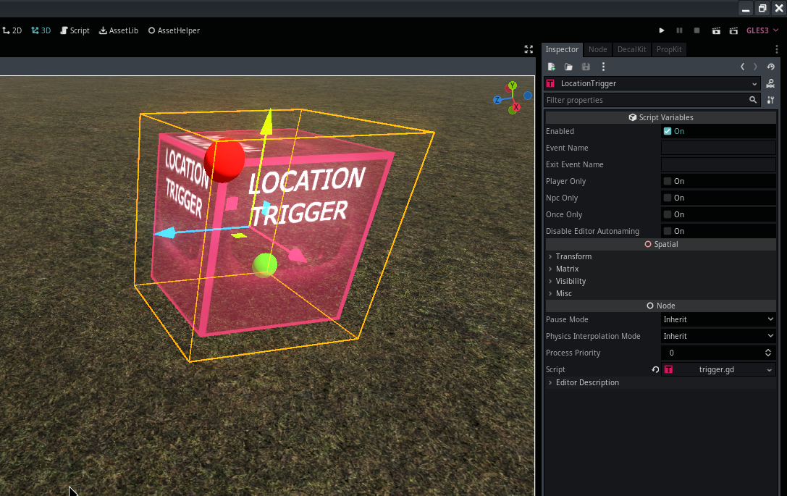
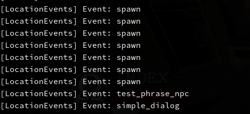

Module: location_logic
Documentation last edited: October 23, 2025 at 14:33 UTC
Description
Итак. Этот модуль. Это просто какой-то код, верно?
.
├── autoload
│ ├── base_scene.gd
│ ├── light_queue.gd
│ └── location_events.gd
├── base.gd
├── button_trigger_cube.gd
├── button_trigger.gd
├── button_usable.gd
├── exit_trigger.gd
├── logic_base.gd
├── shader_compile
│ └── meshes_node.gd
├── trigger_cube.gd
└── trigger.gd
Я имею в виду, посмотри, это в основном просто GDScript, ты понимаешь, о чём я? Я опишу этот модуль, рассказав тебе, что делает каждый файл в "хронологическом" порядке важности.
base.gd - LocationBase
Отец всех локаций. Особый узел. Очень особенный. Это также плохо написанный god class, НО ЭЙЕЙ давай не будем так негативны насчёт этого. Все локации должны использовать
LocationBase
, потому что я так решил. Реально, так легче контролировать инициализацию любой локации. Легче добавить некоторые настройки. Легко настраивать. Это было легко поддерживать тоже, когда это не было огромной кучей мусора. Честно говоря, я бы хотел рассказать тебе больше об этой штуке, но тебе лучше заглянуть в исходный код самостоятельно.
autoload/location_events.gd - LocationEvents
Особый синглтон, который является основой всей игровой логики локаций. Несмотря на его маленький размер исходного кода, он исключительно важен для функционирования всей этой игры.
logic_base.gd - LocationLogicBase
Базовый скрипт логики локации, который ты можешь использовать для определения скрипта логики локации.
"res://locations/scenes/logic/"
содержит все скрипты логики, и они не используются anymore, потому что ST делают работу лучше.
autoload/base_scene.gd - LocationBaseScene
Маленький забавный синглтон
LocationBaseScene
, который позволяет тебе получить твою текущую
LocationBase
, выполнив
LocationBaseScene.get_scene()
. Да. Вот почему он существует. Единственная причина.
button_trigger_cube.gd - LocationButtonTriggerCube

Кнопка, которую игрок может использовать. Это куб, который ты можешь масштабировать и помещать куда угодно.
button_trigger.gd - LocationButtonTrigger
Кнопка, которую игрок может использовать. В отличие от кубической версии, тебе нужно определить начальную и конечную точки для формирования триггера. Это более старая версия, так что её не рекомендуется использовать.
trigger_cube.gd - LocationTriggerCube

Триггер, в который игрок может войти/выйти. Это куб, который ты можешь масштабировать и помещать куда угодно. Он испускает событие локации при входе/выходе.
trigger.gd - LocationTrigger

То же, что и
LocationTriggerCube
, за исключением того, что тебе нужно определить начальную/конечную точки. Опять же, это старше, так что не really рекомендуется для использования.
light_queue.gd - LocationLightQueue
Синглтон, который работает с оптимизацией источников света, скрывая их, если они слишком далеко.
button_usable.gd - LocationButtonTriggerUsable
Просто класс, расширенный от
Usable
, который просто вызывает функцию
use
в узле кнопки.
Устарело: shader_compile/meshes_node.gd, exit_trigger.gd
События локаций

События локаций просты. Какой-то код вызывает
LocationEvents.location_event_occured("thingy")
, а затем другой код проверяет...
LocationEvents.connect("on_location_event", self, "thingy_checker")
# ...
func thingy_checker(event_name, args):
if event_name == "thingy":
Console.write_line("Вау, thingy произошло")
Событие локации - это просто строковое сообщение, которое отправляется через этот "глобальный шин событий". Это позволяет легко создавать масштабируемые игровые системы, однако проектировать уровни с этим может быть сложно.
General Information
Root directories list
assets, docs, src
Nodes
light_queue
LocationEvents
BaseScene
meshes_node
LocationBase
LocationButtonTriggerCube
LocationTriggerCube
Classes
ExitTrigger
LocationLogicBase
LocationButtonTriggerUsable
LocationTrigger
LocationButtonTrigger
Resources
None
Other Scripts
None